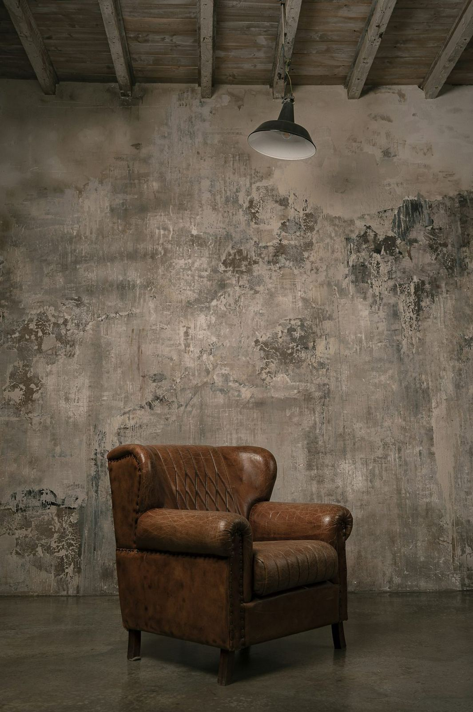
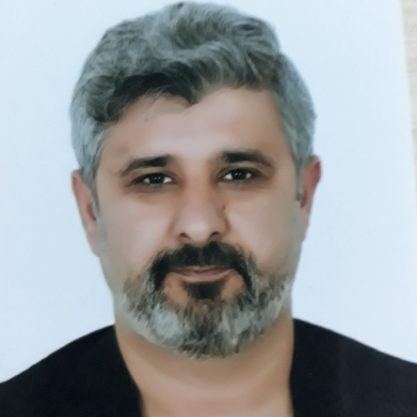

EMDR ile travma ve kaygı üzerine çalışan bir terapist
Bireysel ve çift terapisi, sınav kaygısı ve ebeveyn danışmanlığı, Adnan İnanıcı Caddesi'nde.


Çalışma alanları
Her görüşme gizlilik ve saygı çerçevesinde yürütülür.
Travma ve yas
Zorlayıcı yaşam olayları ve kayıp sonrası süreçler için destekleyici terapi yöntemleri uygulanır.
02Kaygı ve panik
Kaygı, panik atak ve fobiler için bilişsel ve davranışçı tekniklerle çalışılır.
03Bireysel terapi
Kaygı, depresif duygu durumu, stres ve yaşam geçişleri gibi konular güvenli bir ortamda ele alınır.
04Çift ve evlilik terapisi
İletişim sorunları, çatışma döngüleri ve güven konuları çiftle birlikte çalışılır.
05Psikolojik danışma ve rehberlik
Sınav kaygısı, kariyer kararları ve kişisel gelişim konularında danışmanlık verilir.
06Çocuk ve ergen
Davranış, uyum, okul ve duygu düzenleme güçlükleri çocuğun yaşına uygun yöntemlerle değerlendirilir.
Bir dakikalık nefes molası
Kutu nefesi: 4 saniye nefes alın, 4 saniye tutun, 4 saniye verin, 4 saniye bekleyin. Daireyi takip edin.
Bu egzersiz rahatlamaya yardımcı bir tekniktir, terapinin yerine geçmez.
Terapi süreci
Kendi hızınızda ilerleyen, birlikte planlanan bir süreç.
Ön görüşme
Sizi bu sürece getiren konu ve beklentileriniz hakkında ilk görüşme yapılır.
Değerlendirme
Gerekli durumlarda görüşme ve testlerle ihtiyacınız netleştirilir.
Terapi süreci
Ortak belirlenen hedefler doğrultusunda düzenli seanslar planlanır.
Kapanış ve izlem
Kazanımlar birlikte değerlendirilir, gerekirse izlem görüşmeleri yapılır.
Size uygun bir saat bulalım
Formu doldurun ya da arayın, randevunuzu birlikte planlayalım.